VRChat retention case study | Part 1: Who stays | Part 2: Who leaves sooner | Part 3: A fair test
Public Steam reviews give every reviewer a review date and a last session seen. Turning them into a retention measure took three decisions before any model. With those in place, one curve and a few fair comparisons already say a lot about who stays.
At a glance
VRChat doesn't publish retention. Steam publishes every review, and each one carries two facts about its author: the hours of play recorded on the review, and the last time Steam saw them play. Next to the review date, that gives every reviewer a starting point. For people who stopped, that last observed session marks the end; for the rest, I only know that they were still playing when the analysis ended.
After someone reviews VRChat on Steam, how long do they keep playing?
That is a time to event question with incomplete follow up, so it calls for survival analysis. The raw columns can't go straight into a survival model, though. Three measurement decisions come first, and they drive every number after them.
I downloaded every public Steam review of VRChat on 28 August 2026: 267,904 reviews in 30 languages, from launch day, 1 February 2017, to the morning of the download. Steam allows one review per account and game, and an edit changes that review instead of adding one, so each review is one reviewer. Two thirds are in English and three quarters are thumbs up. The typical reviewer had about 30 hours of play recorded at the review. Steam IDs, names and profile links were removed before saving, and no review text is used.
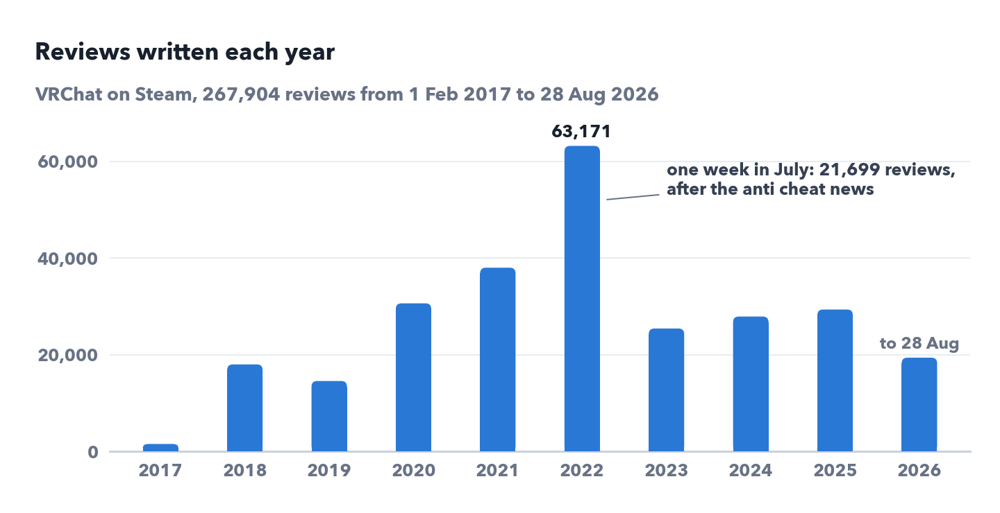
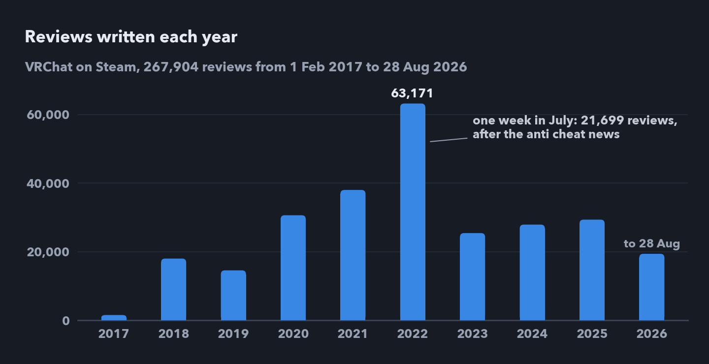
Each decision answers one way the raw data would mislead a survival model: by leaking the future into the inputs, by counting breaks as departures, or by starting the clock at the wrong moment.
Most of the columns about the reviewer describe them on the download day, often years after the review. Total playtime is bigger than playtime at review for 90.7% of people, so it was measured at the download and already holds part of the future. I dropped the four columns of this kind, along with columns that are the same for everyone, almost always empty, or votes from other readers that keep growing after the review. That leaves three inputs known when the clock starts: playtime at review, the thumbs, and the language, used as English or not because half of the 30 languages have fewer than 1,000 reviews.
A second leak was hidden in the edits. 18% of reviews were edited, and since 29 August 2024 the data show an edit resetting playtime at review to the playtime on the day of the edit, a change I could not verify in Steam's public documentation. It affects 19,655 reviews, about 7% of the data. Some earlier edits were reset too: before the switch about one in five of the edits in the test below matched (18%), against 0.7% for never edited reviews whose authors also played after posting. The third decision makes both cases safe.
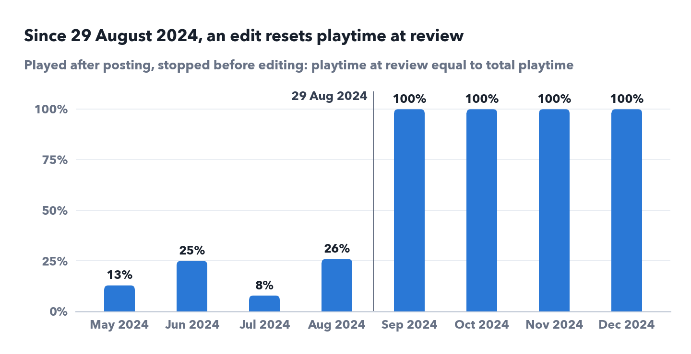
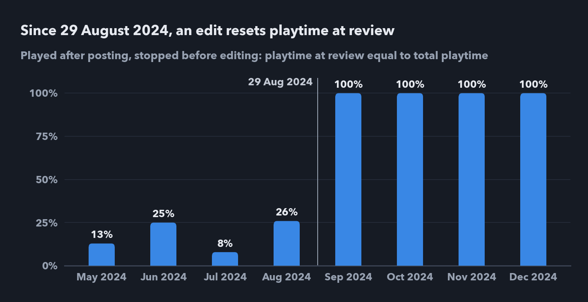
Nobody tells Steam they quit, so a quiet player has to be called gone by a rule. The obvious rule, no play in the 14 days before the download, breaks in a single snapshot: a break that ended in the past is invisible because the player came back, while a break still going on at the download looks exactly like quitting.
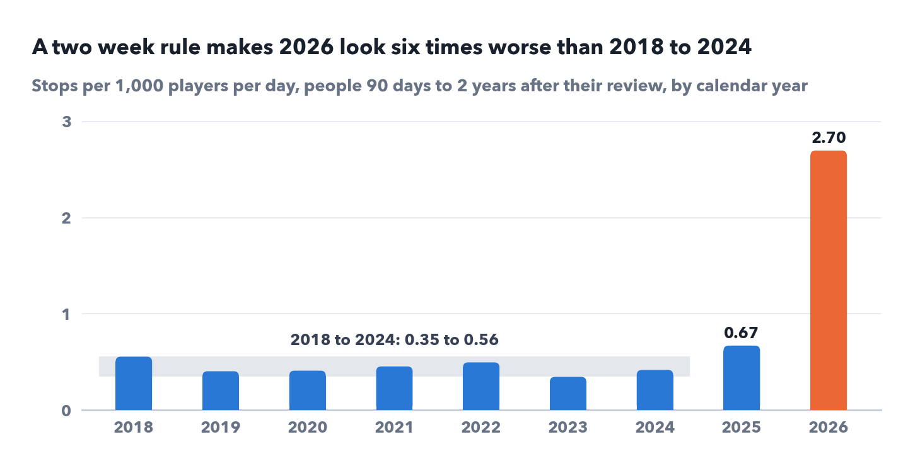
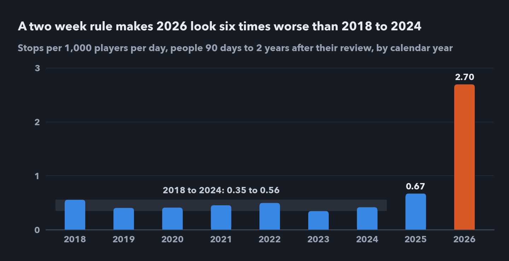
The fix is to end the analysis a year before the download, on 28 August 2025, and use the final year only to confirm: someone counts as gone only when a full year without play follows their last observed session, which keeps breaks shorter than a year from being counted as departures. The cost is that 37,983 reviews whose clock starts in the final year, older reviews edited then included, can't be measured yet. The day 90 share barely depends on how long a silence I require: 81.6% to 82.3% for half a year to a year and a half. The median does, from 1,088 to 1,216 days in the same order. In one snapshot the required silence and the end of follow up are the same choice, so this spread mixes long breaks with the months each rule adds or drops, including the higher risk of 2025 that Part 2 finds. I always quote the median with the one year rule.
Each reviewer needs a time zero. The thumbs, and since August 2024 the playtime, belong to the review's last edit, which can come more than a year after the post. Starting the clock at the post would use facts that weren't true yet, so the clock starts at the last edit: the posting day for the 82% of reviews never edited. The estimate is therefore the time from the review as it finally stands, when its inputs were recorded, to the last observed session. For the same reviewers, a clock at the first post would give a median of 1,287 days; the last edit gives 1,165.
The last two choices move the headline far more than sampling error does: the silence rule moves the median across 128 days and the clock by about 120, while its 95% confidence interval is 1,157 to 1,173 days. A two week rule would show 2026 as six times worse than 2018 to 2024.
With those rules, 229,920 reviewers can be followed: all 267,904 except the 37,983 whose clock starts in the final year and one with no session on record. Each falls into one of three groups.
The already gone were inactive before their clock started, so they are a different group, with no time to follow; for 15% of them the clock starts at a later edit, so they stopped after posting but before their last edit. I report them as their own share; in the curve for all reviewers they appear only as the drop at time zero, which is why it starts at 91.4%. Their reviews lean negative, 57% thumbs up against 78% for everyone else, and they wrote 15.7% of all thumbs down reviews.
The 50.1% still playing were seen playing after the cutoff, so for them I know only a lower limit, and simple summaries handle exactly these people badly. A raw churn percentage counts 77.1% of 2017 reviewers as gone against 22.3% of 2025 reviewers, mostly because they had 7.7 and 0.3 years to leave: at the same age the two years match, 79.2% of each still playing at day 90. The median of the raw durations is 625 days if people still playing are counted as stopped at the end, and 310 if they are dropped. The Kaplan Meier estimator uses each person for exactly as long as they were watched.
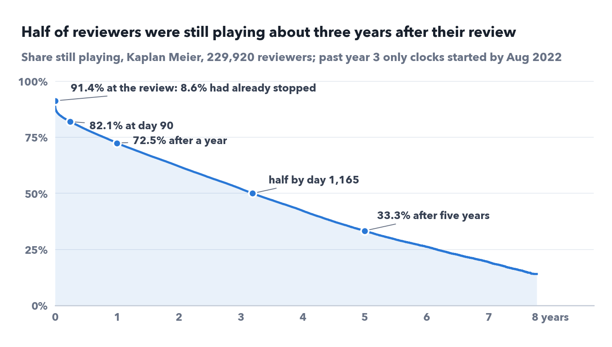
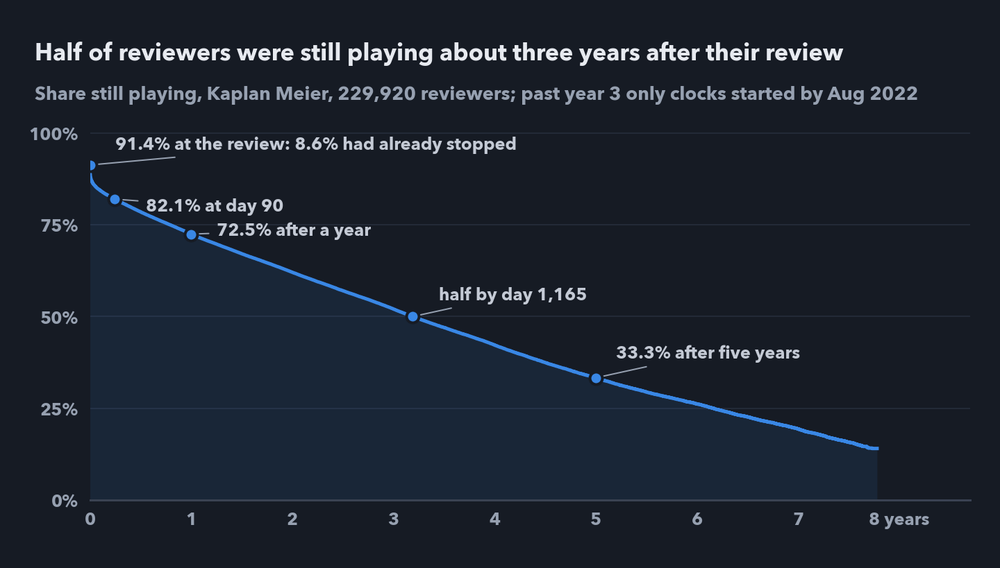
Leaving is front loaded: of the 9.3 points lost between the review and day 90, 4.5 go in the first week. After that the curve declines slowly for years. One curve, though, mixes very different players.
The natural next step is to split the curve by what is known when the clock starts. These comparisons are descriptive, holding one input fixed at a time; Part 2 asks what each adds once all the others are held fixed. Each comparison here needs one check, because the groups differ in more than the input being compared.
I split playtime into five bands with round edges fixed in advance: under 1 hour, 1 to 20, 20 to 100, 100 to 1,000 and over 1,000 hours.
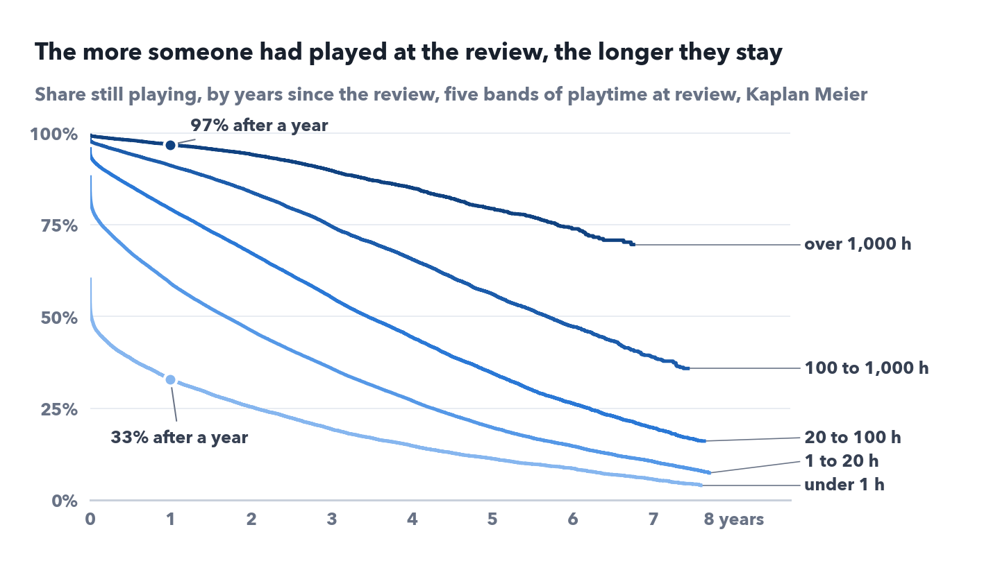
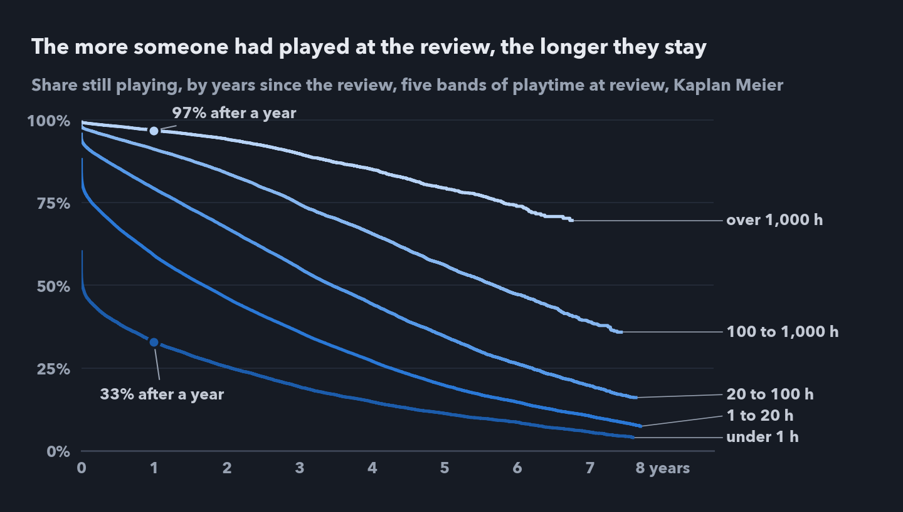
The curves never cross, and the order holds at every horizon. The two lightest bands are 46% of reviewers but account for 67% of all stops, counting those already gone at the review. The top band's result doesn't depend on its edge: starting it at 900 or 1,100 hours gives 96.9% and 97.0% a year later. With the 229,805 reviewers who have a recorded playtime, a log rank test across the five bands gives a p value too small to print, so the effect sizes carry the argument here.
The raw comparison says the thumbs barely matter: 73.1% of thumbs up and 70.5% of thumbs down reviewers are still playing a year later. That comparison is confounded. Thumbs down reviewers are more often heavy players, 17.7% with over 1,000 hours against 8.5%, and heavy players keep playing at high rates either way. Inside the 1 to 20 hour band, the new players of this series, the gap is 14 points, the largest of the five bands, and most of it comes from people who had already stopped when they wrote.
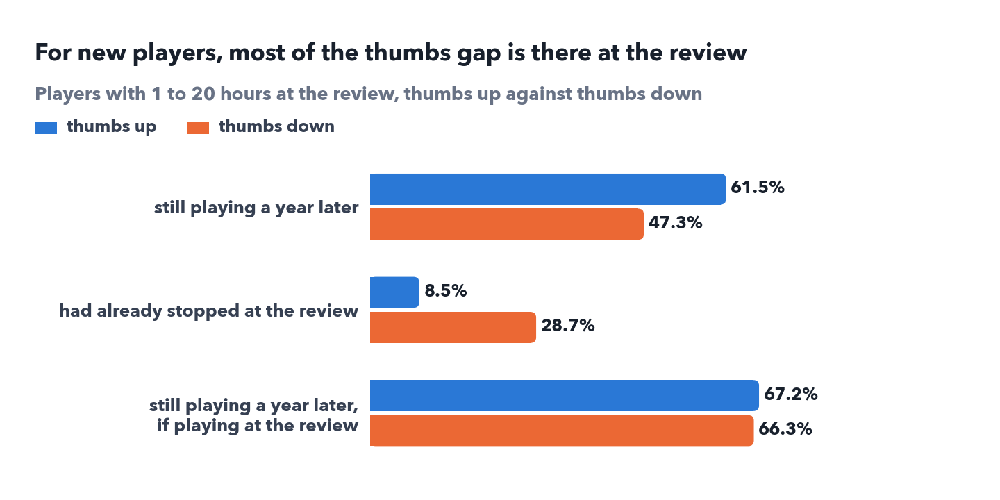
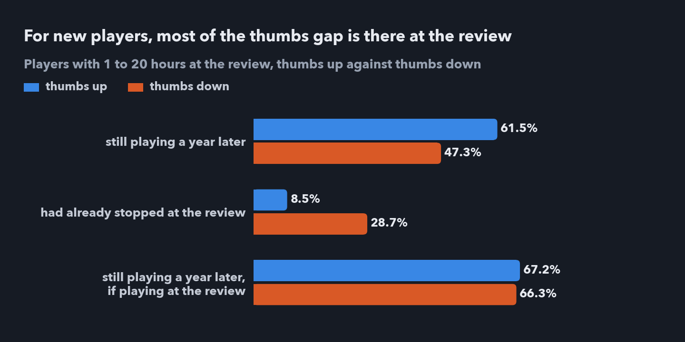
The gap among those still playing is that small partly because of the July 2022 protest, when many players wrote a thumbs down and kept playing: leaving that week out, it is about 4 points, 67.2% against 62.8%.
The same check shrinks the language gap. Reviews in other languages show 66.5% still playing a year later against 75.5% in English, but light players write in English less often: 48% under 1 hour, over 70% from 20 hours up. Inside the bands the gap is about 7 points under 20 hours, about 1 point at 20 to 100 hours and none from 100 hours up. So much of it is mix, but a real gap remains for players under 20 hours.
The July 2022 protest week, 25 to 31 July, is the sharpest case. 19,959 clocks started that week (fewer than its 21,699 reviews, since some were edited later), against about 528 in the median week; 91% were thumbs down, and 26% came from players with over 1,000 hours, against 9% of everyone else. The protesters look far more loyal overall, 83.6% still playing a year later against 73.8% for the other weeks of June to September 2022. Inside all five bands they kept playing about as well as reviewers from those other weeks, never more than 0.6 points worse and up to 2.3 points better: 55.3% against 55.9% at 1 to 20 hours, 93.3% against 91.0% at 100 to 1,000, and 98.0% against 98.0% over 1,000 hours.
Holding playtime at review fixed changed all three comparisons: it widened the thumbs gap for new players, shrank the language gap, and removed the protest group's apparent loyalty, largely accounted for by its veterans.
I can say
I cannot say
In one sentence
Once leakage, breaks and the clock are handled, the estimated median time to the last observed session is about three years, a figure that rests on earlier reviewers, and playtime at review separates those who stay from those who leave far more than the thumbs or the language do.